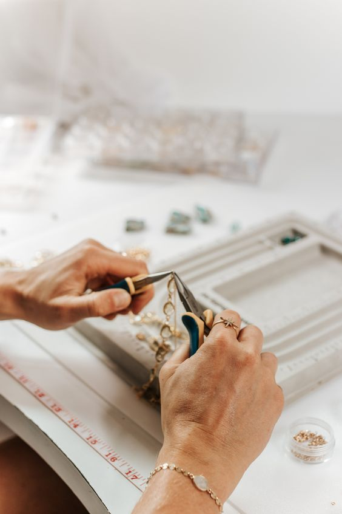

Quienes somos
Tina Sturm es una marca de accesorios y bisuteria que nacio en 2017 en Villa Gral Belgrano, Córdoba.
Somos dos hermanas, Martina y Agustina, y juntas creamos todo con nuestras manos.
El nombre Tina Sturm se debe a que nuestros nombres terminan en "tina" y Sturm significa "tormenta" en alemán. Algo que nos remonta a nuestra abuela que nos llamaba "pequeñas tormentas"
La idea original no era crear un proyecto, sino vida en él. ¡Bienvenida!

¨When you buy from a small bussiness, an actual person does a little happy dance"
